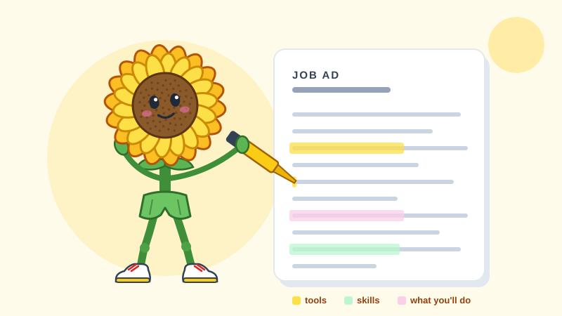

Key takeaways
- Tailoring means pointing at experience you already have, in the job's own words. It never means inventing anything.
- In Huntr's analysis of 1.7 million applications, tailored resumes turned into interviews 1.6x to 2x as often as resumes sent unchanged.
- The method: highlight the job ad, make a match list, rewrite your summary, bullets and skills, then check every line is true.
- Leave out what you don't have. A gap is fine; a claim you can't back up in an interview isn't.
You've sent 40 applications. Same resume, 40 times. Mostly silence.
The fix usually isn't a better resume. It's the same resume, pointed at each job. Huntr's analysis of 1.7 million applications found tailored resumes turned into interviews 1.6x to 2x as often as ones sent unchanged (source).
Most guides stop at "match the keywords". This one tailors a real-looking resume to a real-looking job ad, line by line, so you can copy the method, not just the advice.
- 1Highlight the job ad
- 2Make a match list
- 3Rewrite in their words
- 4Check every line is true
Why tailoring works
A job ad is the hiring manager's wish list. Your job is to make it obvious, fast, that you match it. Fast matters: in Ladders' eye-tracking study, a recruiter's first look at a resume lasted 7.4 seconds, and many recruiters search their applicant tracking system (ATS) by keyword before a human reads anything (our research roundup).
“Hiring managers are not detectives.”
Tailoring does the detective work for them. You're not becoming a different person for each job. You're turning to face it.
Meet Aanya and her one-size-fits-all resume
Aanya is a fictional new graduate: a business degree, a year in the college marketing club and a three-month café internship. This is the resume she's been sending everywhere.
Aanya's resume, before
Summary: Hardworking BBA graduate looking for an opportunity to grow in a reputed company.
- Handled social media for college fest.
- Part of marketing club, helped with newsletter.
- Internship at a café, did various tasks.
Skills: MS Office, Social Media, Communication, Teamwork
Nothing here is false. It's just invisible. Now here's a job she actually wants.
Step 1: Highlight the job ad
Read the ad twice. The second time, mark it up with three colours: tools, skills, and what you'll actually do. Underline the exact job title.
We're looking for a Marketing Coordinator to grow our community on Instagram. You'll plan and publish content in Canva, work with micro-influencers on product launches, run small Meta Ads campaigns, and report results every week in GA4. You're organised, write clear captions and love data. Nice to have: email marketing (Klaviyo).
What the colours tell you:
- The job title goes into your summary word for word.
- Words that come first or repeat matter most. Here, that's Instagram and content.
- "Nice to have" is a bonus, not a requirement. Don't panic about it.
- The verbs tell you the level. "Coordinate" and "support" mean entry-level; "own" and "lead" mean they want experience.
Step 2: Make a match list (and be honest)
For each highlight, ask: have I really done this? Where's the proof on my resume?
| The job asks for | Aanya has it? | Proof |
|---|---|---|
| ✓ Yes | College fest page, café page | |
| Canva | ✓ Yes | Designed the fest posts |
| Work with influencers | ✓ Yes | Coordinated student influencers for the fest |
| Report results every week | ✓ Yes | Weekly reach report for the café owner |
| Clear captions | ✓ Yes | Wrote the club newsletter |
| Email marketing (nice to have) | ~ Partly | Newsletter yes, Klaviyo no |
| Meta Ads | ✗ No | Leave it out |
| GA4 | ✗ No | Show her reporting habit instead (Instagram Insights) |
The ✗ rows are the most important rows in the table. Leaving Meta Ads off isn't a weakness. Claiming it and getting asked about it in the interview is.
Step 3: Rewrite the summary
Your summary is the first thing read. Put in the exact job title, two or three of the highlighted skills you really have, and what you want to do for them.
Before
Hardworking BBA graduate looking for an opportunity to grow in a reputed company.
Tailored
Business graduate applying as a Marketing Coordinator, with hands-on Instagram, Canva and influencer experience from running a 2,000-person college fest's social media. Used to reporting results every week.
"Hardworking" and "reputed company" told the recruiter nothing. The new version answers their first question, can she do this job?, before they've finished the paragraph.
Step 4: Rewrite the bullets in their words
Take each bullet, find what it has in common with the ad, and say it with the ad's words, plus a real number if you have one. Same experience, every time.
Before
Handled social media for college fest.
Tailored
Ran Instagram for a 3-day college fest (2,000+ attendees): planned and published 30 posts made in Canva and coordinated 5 student influencers.
Matches 4 highlights. Nothing new was added; she just stopped hiding the details.
Before
Internship at a café, did various tasks.
Tailored
Managed the café's Instagram for 3 months and sent the owner a weekly report on post reach from Instagram Insights.
"Various tasks" hid the most relevant thing she did. Note what's not here: GA4. She didn't use it, so it doesn't appear.
Before
Part of marketing club, helped with newsletter.
Tailored
Wrote the marketing club's weekly email newsletter for 600 members, keeping updates short and clear.
This covers the "nice to have" honestly: email marketing, yes; Klaviyo, not claimed.
Put the most relevant bullet first under each role. Recruiters skim top-down, so order is part of tailoring too. For more on writing bullets with results, see how to write resume bullet points.
Step 5: Reorder and respell your skills
Lead with the skills the ad asked for, and spell them the way the ad does. If they say "Canva", don't write "graphic design tools". Drop generic filler like "Teamwork"; your bullets show that better.
Before
MS Office, Social Media, Communication, Teamwork
Tailored
Instagram · Canva · Influencer outreach · Email newsletters · Instagram Insights · Google Sheets
Step 6: Check every line is true
Before you hit send, read the tailored version once more and ask of every line:
- ✓ Did I really do this, at this level?
- ✓ Could I talk about it for two minutes in an interview?
- ✓ Is every number real?
- ✓ Are tools and skills spelled exactly as in the ad?
- ✓ Are my job titles, employers and dates unchanged?
What to change, and what never to touch
Change for every job
- Summary
- Wording and order of bullets
- Which bullets you include
- Order and spelling of skills
Never change
- Job titles you actually held
- Employers and dates
- Degrees and certifications
- Numbers and results
Can I just use ChatGPT for this?
Yes, and it's a good shortcut, if you give it rules. Without them it tends to invent numbers ("boosted engagement by 42%"), add tools you've never touched, and reach for the same buzzwords as everyone else. This prompt keeps it honest:
Here is my resume and a job description. Rewrite my summary, bullet points and skills so they match the job's wording. Rules: - Use only facts that are already in my resume. Do not add numbers, tools or results I haven't given you. - Keep my job titles, employers and dates exactly as they are. - Use the job's exact words for skills and tools I really have. - If the job asks for something I don't have, list it under "Gaps" instead of adding it. - Keep each bullet under 25 words. JOB DESCRIPTION: [paste here] MY RESUME: [paste here]
Then do Step 6 yourself. ChatGPT also won't keep your layout, so you'll paste the result back into your resume and fix the formatting. For more on making AI-written text sound like you, read how to use AI without sounding like AI.
Or let Flower Resume do Steps 1 to 5
This is the job we built Flower Resume for. You save your experience once. For each job, you paste the ad and it:
- pulls out the required and nice-to-have keywords,
- shows how well your resume covers them (Low, Fair or Strong match),
- drafts a tailored summary, bullets and skills from your saved profile,
- and exports a clean PDF with no watermark.
You still do Step 6: review every line. Everything is free, including the AI, with a free account. No credits, no trial, no card.
Daisy's rule
Sunflowers turn to face the sun. Your resume should turn to face the job. Same flower, different direction.